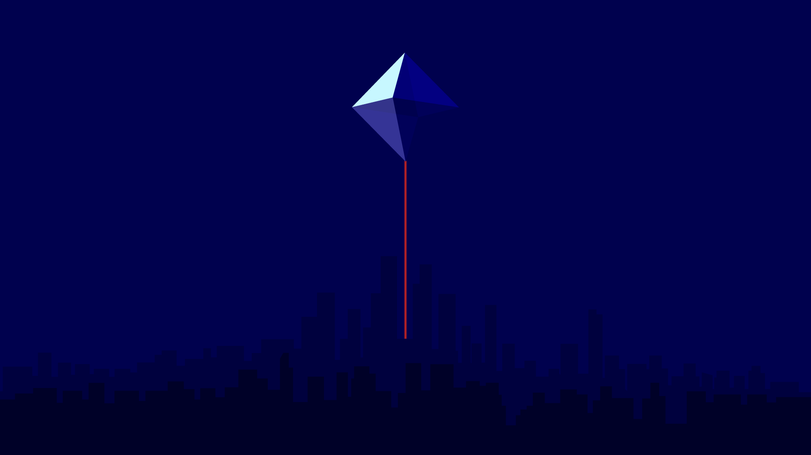

{#-
  This file was automatically generated - do not edit
-#}
{% extends "base.html" %}
{% block tabs %}
  {{ super() }}
  <!-- <style>.md-header{position:initial}@media screen and (min-width:60em){.md-sidebar--secondary{display:none}}@media screen and (min-width:76.25em){.md-sidebar--primary{display:none}}</style> -->
  <style>
    /* 全屏封面 */
    .hero {
      position: relative;
      width: 100vw;
      height: 100vh;
      overflow: hidden;
    }

    .hero__image {
      position: absolute;
      inset: 0;
      z-index: 0;
    }

    .hero__image img {
      width: 100%;
      height: 100%;
      object-fit: cover;
      filter: blur(4px) brightness(0.8); /* 背景模糊 + 稍暗一点 */
      transform: scale(1.05);            /* 稍微放大避免模糊边缘 */
    }

    /* 标题区块 */
    .hero__content {
      position: relative;
      z-index: 1;
      height: 100%;
      display: flex;
      flex-direction: column;
      justify-content: flex-end;  /* 靠下 */
      align-items: flex-start;    /* 靠左 */
      padding: 10vh 8vw;          /* 留出边距，显得有呼吸感 */
      color: #fff;
      text-shadow: 0 2px 12px rgba(0,0,0,.6);
      padding-bottom: 30vh;
    }

    .hero__content h1 {
      font-size: clamp(2.5rem, 6vw, 4rem);
      font-weight: 800;
      margin: 0 0 .3em 0;
    }

    .hero__content p {
      font-size: clamp(1.2rem, 2vw, 1.5rem);
      margin: 0;
      max-width: 40rem;  /* 副标题宽度不要太长 */
      opacity: .9;
    }
  </style>

  <!-- 封面 -->
  <section class="hero">
    <div class="hero__image">
      
    </div>
    <div class="hero__content">
      <h1>Fan Xiao</h1>
      <p>Exploring AI generalization</p>
    </div>
  </section>
{% endblock %}
{% block footer %}{% endblock %}